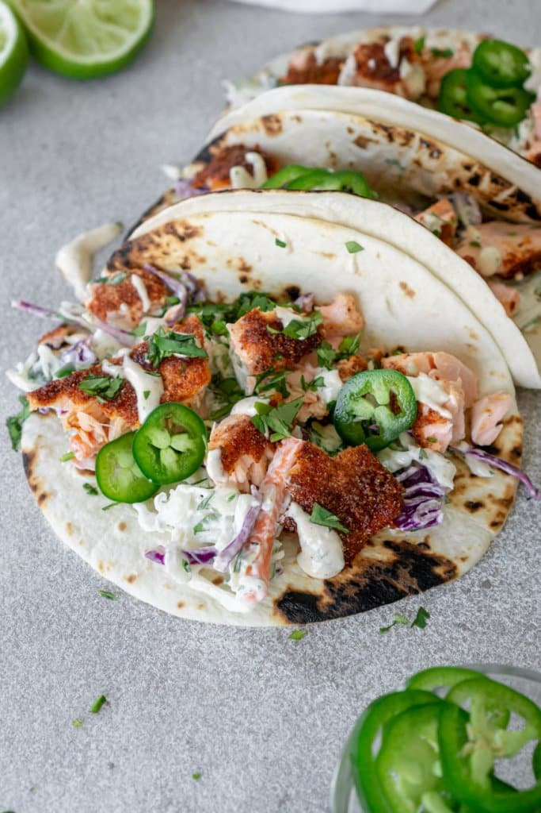

Salmon tacos

Ingredients
Mango Salsa
- 3 mangoes, diced
- 2 peaches, diced
-
- 3 poblano peppers, seeded and diced
-
- ½ red onion, diced, or more to taste
-
- ½ lime, juiced, or more to taste
-
- 1 bunch cilantro, chopped, divided
Salmon + Special Sauce
- 1 (8 ounce) container sour cream
- 3 tablespoons mayonnaise
- 1 tablespoon ketchup
- ⅛ teaspoon ground cayenne pepper
- salt and ground black pepper to taste
- 24 (6 inch) corn tortillas
- cooking spray
- 2 pounds fresh salmon
- 1 small head cabbage, shredded
- 3 avocados, sliced
- 2 limes, cut into wedges
Steps for creation
- Combine mangoes, peaches, poblano peppers, red onion, juice of 1/2 a lime, and 1/2 the cilantro in a large bowl to make mango salsa. Cover with plastic wrap and refrigerate, at least 1 hour, preferably overnight.
- Mix sour cream, mayonnaise, ketchup, cayenne pepper, salt, and black pepper in a small bowl to make special sauce.
- Preheat oven to 350 degrees F (175 degrees C). Arrange tortillas on a baking sheet.
- Preheat a grill pan over medium-high heat; coat with cooking spray. Cook salmon until easily flaked with a fork, about 4 minutes per side. Transfer to a plate and flake into smaller pieces with a fork.
- Heat tortillas in the preheated oven until warmed through, about 5 minutes.
- Serve hot and enjoy!
- Divide salmon among tortillas. Top with mango salsa, special sauce, shredded cabbage, avocados, and remaining cilantro. Wrap up tacos and serve lime wedges alongside.
Cooks Notes
Use flour tortillas instead of corn tortillas if preferred.
Substitute nectarines for the peaches if desired.
Substitute Anaheim peppers for the poblano peppers if desired.
Author: Tonee Muldrew